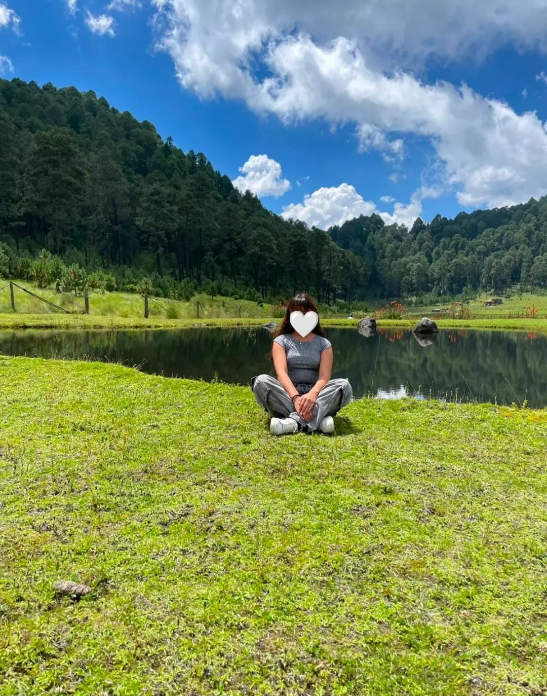
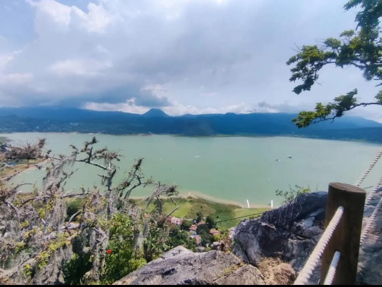
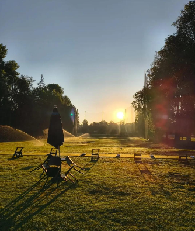
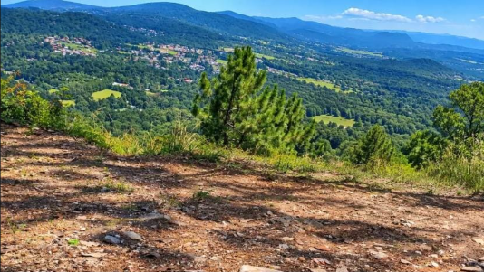
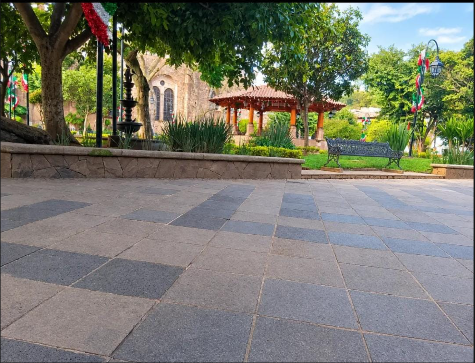

LUGAR 1
"Pipiol es un pueblito bien tranquilo que está a 15 minutos del centro de Valle de Bravo, sobre la carretera a Toluca. Se llama Santa María Pipioltepec.Lo más llamativo de Pipiol es que es puro bosque y aire fresco. Ahí está la Hacienda de Pipioltepec que es del siglo XVI y el famoso Campamento Pipiol, donde van niños."

LUGAR 2
"La Peña es lo más impresionante si te gusta la vista. Es una piedra gigante que está en medio del pueblo y desde arriba se ve todo Valle.Tienes que subir, son como 20 minutos caminando desde el centro. Arriba está el mirador y se ve todo el lago, el centro con sus tejitas rojas y los bosques alrededor."

LUGAR 3
"El campo de golf de Avándaro es uno de los más bonitos de Valle de Bravo y está a 10 minutos del centro, camino a Avándaro.Es lo más llamativo si te gusta lo tranquilo y con vista. El campo es enorme, todo verde, rodeado de bosque y con la vista del lago al fondo. Es un campo de 18 hoyos, profesional."

LUGAR 4
"La Huerta Es una comunidad rural ubicada a unos 8 km al sureste de Valle de Bravo, dentro del Área Natural Protegida (ANP) Zona Protectora Forestal de las Cuencas de los Ríos Valle de Bravo, Malacatepec, Tilostoc y Temascaltepec, conocida como el "Santuario del Agua".

LUGAR 5
"El centro de Valle de Bravo es lo más llamativo y lo que no te puedes perder. Es un pueblito mágico de calles empedradas, casitas blancas con teja roja y con el lago al fondo.Si vas, tienes que visitar:El Kiosco y la Plaza Principal, que está justo a un lado de la iglesia. Ahí es donde se junta toda la gente, hay musiquita, helados."

LUGAR 6
"El Velo de Novia es una cascada bien alta que está a 15 minutos del centro de Valle, camino a Avándaro.Es lo más llamativo si te gusta la naturaleza. Es una caída de agua de 35 metros que cae como si fuera un velo blanco, por eso le dicen así. Todo alrededor es bosque bien verde y fresco."